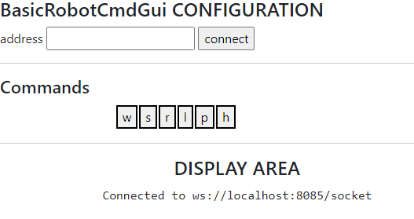
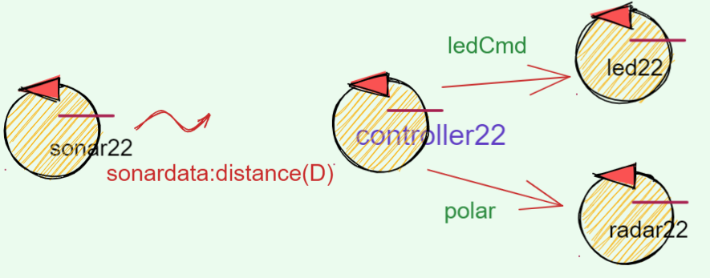
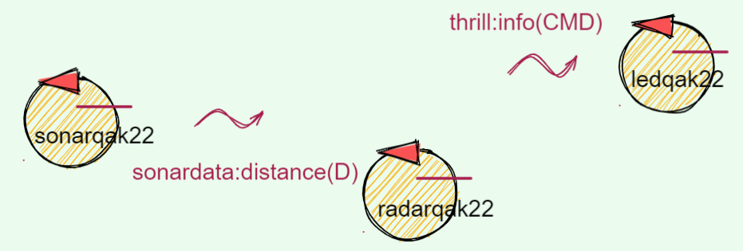
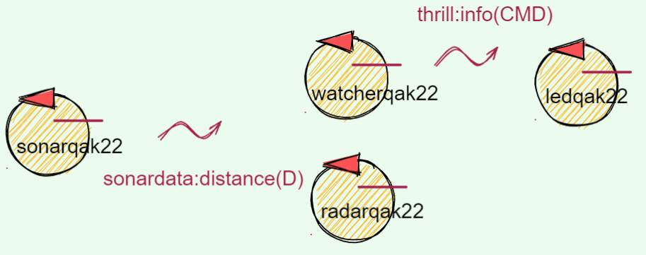

Applicazioni 2022¶
Il QActor (meta)model è stato introdotto come supporto a metodi agili di sviluppo (Agile software development) di sistemi software distribuiti ed eterogenei.
In particolare, la possibilità di eseguire un modello QAk di un sistema già al terminae della fase di analisi del problema può essere molto utile per:
un’interazione più produttiva con il cliente al fine di comprendere meglio i requisiti
definire una archittetura logica di riferimento per il sistema da produrre e per la definizione del Product Goal
definire un piano di lavoro e impostare il primo SPRINT definendone:
un insieme significativo di test funzionali (piani di testing) già espressi in modo formale come programmi.
Per dare esempi di questo modo di procedere, svilupperemo un insieme di progetti applicativi di ‘ispirazione IOT’ a complessità crescente.
Premessa operativa¶
si esperimenti il sistema distribuito resourcecore e External caller1 (tratto da demorequest.qak)
unibo.basicRobot22¶
Goal di basicRobot22
Costruire un robot ‘astratto’ capace di gestire diversi tipi di robot concreti e capace di eseguire comandi aril
Il progetto unibo.basicRobot22 , descritto in BasicRobot22, propone il modello basicRobot.qak che definisce l’attore basicrobot, il quale realizza la risorsa di base per tutte le applicazioni che seguono. Questa risorsa utilizza:
pathexec¶
Il modello basicRobot.qak include anche la definizione dell’attore pathexec dapprima definito nel progetto unibo.pathexecutor.
unibo.pathexecutor¶
Il progetto unibo.pathexecutor propone il modello pathexecutor.qak che definisve l’attore pathexec, il quale utilizza BasicRobot22 per eseguire la richiesta di esecuzione di un path dato, con possibile successo o fallimento. Nel caso di fallimento, la risposta fornisce il path ancora da compiere.
Attivazione di basicRobot22¶
Il sistema basicrobot può essere attivato usando basicRobot22.yaml col comando:
docker-compose -f basicrobot22.yaml up
//per attivare solo wenv:
docker-compose -f basicrobot22.yaml run --service-ports wenv
I files di configurazione sono:
webForActors¶
Goal di webForActors
Costruire una WebGUI per il robot unibo.basicRobot22 capace di visualizzare l’esito dei comandi
Il progetto webForActors, introdotto in Primi passi con SpringBoot, è stato modificato in modo da definire una GUI per il sistema unibo.basicRobot22
{kind=link}
unibo.mapperQak22¶
Goal di mapperQak22
Utilizzare unibo.basicRobot22 per creare la mappa della stanza
Il progetto unibo.mapperQak22 contiene due modelli:
mapemptyroom22.qak : utilizza BasicRobot22 e UniboPlanner per creare (e salvare) la mappa di una stanza rettangolare vuota (almeno sui bordi) secondo la politica BoundaryWalker. E’ utile confrontare questo modello con:
mapwithobstqak22.qak : utilizza BasicRobot22 e UniboPlanner per creare (e salvare) la mappa di una stanza rettangolare che contiene ostacoli fissi
unibo.robotappl¶
Goal di mapperQak22
Utilizzare unibo.basicRobot22 e pathexec per creare una applicazione.
Il progetto unibo.robotappl: utilizza pathexec per spostare il robot in un dato punto della stanza, nota la mappa.
Riprendiamo il RadarSystem¶
Affrontare la costrzuione di un sistema software partendo dalla costruzione di uno o più modelli significa promuovere una metodologia di sviluppo top-down che, partendo dai requisiti, giunge al livello delle tecnologie di implementazione solo dopo avere ben compreso le problematiche indotte dai requisiti stessi e dopo avere definito l’architettura del sistema.
Le tecnologie adottate per la implementazione non sono quindi più una scelta ‘a-priori’, ma costitusicono la risposta ritenuta più adeguata dagli analisti e dai progettisti per la costruzione concreta del sistema.
Al termine del nsotro percorso, è quindi opportuno riprendere il sistema RadarSystem dal quale siamo partiti cercando di impostare la fase di analisi dei requisiti e la fase di analisi del problema con l’obiettivo di definre, al temine di ciscuna di queste, un modello (eseguibile) del sistema, avvalendoci del QActor (meta)model.
Cerchermo di procedere in modo sintetico, evidenziando, per ogni fase, i punti salienti, con richiami a quanto fatto in precedenza.
RadarSystem: analisi dei requisiti¶
Abbiamo già introdotto una User story e, dopo le Domande al committente, abbiamo asserito (in linguaggio naturale) che:
Si tratta di realizzare un sistema software distribuito ed eterogeneo
I termini di modello possiamo ‘formalizzare’ questo asserto nel modo che segue:
RadarSystem: modello dei requisiti¶
System radarsystem22
Context ctxrasp ip [host="192.168.1.xxx" port=8086] //Raspberry
Context ctxpc ip [host="192.168.1.yyy" port=8088] //PC
QActor sonar22 context ctxrasp{ State s0 initial{} }
QActor led22 context ctxrasp{ State s0 initial{}. }
QActor radar22 context ctxpc{ State s0 initial{} }
QActor controller22 context ctxpc{ State s0 initial{} }
Questo modello, a livello-requisiti, dice che il sistema deve essere distributo su due nodi (contesti): il sotto-sistema sul Raspberry deve includere i dispositivi, mentre il sotto-sistema sul PC deve includere il RadarDisplay e il Controller.
L’esistenza del Controller non si evince dal testo dei requisiti, ma è stata motivata nella nostra prima Analisi del problema, che si era conclusa con la evidenziazione di Un primo abstraction gap che ci ha indotto a iniziare un percorso per definire e costruire componenti riusabili che possano ‘sopravvivere’ all’applicazione che stiamo costruendo per poter essere impiegati in futuro in altre applicazioni distribuite.
Questo percorso è stato svolto in modo bottom-up, partendo dai protocolli per le comunicazioni in rete, ed è culminato, dopo vari passi, nella definizione del QActor (meta)model. Questo linguaggio si basa su un insieme di concetti (metamodello) che ora ci permette di:
ignorare i dettagli tecnologici relativi alle interazioni
focalizzare l’attenzione sulla logica della interazione e sulle informazioni che i componenti si devono scambiare
impostare in tempi brevi un prototipo eseguibile con cui interagire con il committente
La costruzione di un prototipo eseguibile diventa ora un obiettivo importante, fin dalla fase di analisi del problema o, quantomento, fin dal primo SPRINT di progettazione/sviluppo.
RadarSystem: analisi del problema¶
Domanda-chiave: come interagiscono i componenti?
La risposta ‘formale’ a questa domanda induce a definire un insieme di (tipi di) messaggi, prima ancora di addentrarci sui dettagli interni dei componenti.
Ricordiamo il nostro precedente SPRINT2: RadarSystem distribuito e il lavoro connesso alla fase di Deployment, che ora sappiamo poter variare agevolmente, agendo su una dichiarazione. Se ad esempio si ritiene opportuno che anche il Controller operi sul RaspberryPi, basterà dire:
QActor controller22 context ctxrasp{ ... }
La nostra attenzione è invece ora rivolta a un aspetto che rimaneva sommerso nella fase in cui volevamo definire i Supporti per comunicazioni e che si è evidenziato dapprima nella fase di Approfondimento della analisi del problema e poi, passando attraverso ol concetto di Contesti-contenitori, nella introduziuone di una Struttura dei messaggi applicativi basata su una precisa Terminologia di riferimento (tipologia) per i messaggi.
Ora, come analisti del problema, asseriamo che:
il Sonar è un dispositivo che, una volta attivato, emette informazioni senza sapere a chi interessino
il RadarDisplay è un componente interessato alle informazioni emesse dal Sonar
il Led è un dispositivo che esegue comandi di on/off
il Controller è il componente che include la businness logic. Esso è interessato alle informazioni emesse dal Sonar. in quanto deve inviare comandi al Led a secondo dalla distanza rilevata. Il Controller è anche ritenuto responsabile dalla attivazione/disattivazione del Sonar.
In questa analisi, abbiamo ritenuto un valore aggiunto quello di ridurre quanto più possibile le conoscenze reciproche (e quindi ridurre le interdipendenze esplicite) tra i componenti.
Come analisti, indichiamo quindi che componenti del sistema devono interagire utilizzando i seguenti tipi di messaggio:
Dispatch sonaractivate : info(ARG) //
Dispatch sonardeactivate : info(ARG)
Dispatch ledCmd : ledCmd(ONOFF)
Event sonardata : distance( V )
Punto-chiave: se qualche analista dissente, non possiamo passare al progetto
Infatti possiamo pensare ai risulati dell’analisi come la specifica di COSA (WHAT) occoore fare. Compito del progetto è di passare da WHAT a HOW.
Tuttavia, come analisti del problema, possiamo anche definire una versione eseguibile del modello, in modo da coinvolgere subito anche il committente ‘al suo livello di competenza e di interesse’.
Punto-chiave: sapere cosa pensa il committente, discutendo su un prototipo
RadarSystem: architettura_logica_1¶
{kind=link}
Modello della analisi come primo prototipo¶
La figura precedente è una prima rappreentazione (grafica e semi-formale, della architettura) del sistema, che può essere rappresentato, in modo formale ed eseguibile, dal modello radarsysystem22analisi.qak.
RadarSystem: una diversa analisi¶
Durante la SprintReview (si vedano le note su SCRUM) qualcuno osserva che si potrebbe concepire il sistema in modo diverso, evitando la introduzione di un Controller che conosce i (nomi dei) componenti Led e Radar.
In particolare viene asserito che:
un sistema nasce perchè un insieme di enti (che verranno poi visti come ‘componenti’) elaborano informazione in un modo che può risultare coordinato e ‘goal oriented’ a un osservatore esterno, ma che non è forzato/imposto/realizzato da nessun componente in particolare
ciascun ente opera in modo totalmente autonomo, senza essere consapevole della esistenza degli altri
l’informazione scambiata assume la forma di eventi che possono indurre ciascun ente ad effettuare azioni locali che, con gli occhi di un ossservatore ‘globale’ producono il soddisfacimento dei requisiti.
Alla domanda:
ma come fa il Led ad accendersi se nessuno gli invia un comando?
viene data la seguente risposta:
si assume che ogni componente sia indotto as operare in termini di ‘reazione a stimoli’ rappresentati da eventi. Il Led quindi potrebbe essere definito come un componente capace di percepire un evento/stimolo del tipo:
Event thrill : info(CMD)
Il Led potrebbe accendersi se l’evento thrill ha contenuto info(on) e spegnersi se ha info(off).
E’ ovvio che si potrebbe introdurre un Controller che ha come ‘obiettivo dichiarato’ la trasformazione di
eventi sonardata:distance(D) in eventi thrill a seconda del valore D.
Ma si potrebbe anche perseguire l’idea (o proporre un nuovo ‘metamodello’ organizzativo) in cui i sistemi possono ‘evolvore in modo spontaneo’ quando, nell’ambito di un insieme già attivo, si introduce un nuovo elemento.
Si supponga ad esempio di attivare (su nodi di elaborazione diversi) i componenti Sonar, Radar e Led
{kind=link}
In questa configurazione, il Radar mostra i dati emessi da Sonar, ma il Led non si accende in quanto manca
un componente capace di trasformare eventi sonardata:distance(D) in eventi thrill.
Se però attiviamo un nuovo componente (diciamo un watcher) dotato di un valore di soglia interno (diciamo DLIMIT),
capace di perecipere gli eventi sonardata:distance(D) e di emettere thrill:info(on) se D<=DLIMI
o altrimenti thrill:info(off), allora vederemo che il Led si comporterà in accordo a un nostro piano di testing.
watcher.qak¶
Il ‘componente aggiuntivo’ che permette di raggiungere l’effetto voluto, può essere subito modellato come segue:
Event sonardata : distance( V ) Event thrill : info(CMD) QActor watcherqak22 context ctxwatcherqak22{ [# val DLIMIT = 30 #] State s0 initial { println("$name STARTS") } Transition t0 whenEvent sonardata -> handleSonarData State handleSonarData{ onMsg( sonardata : distance(D) ) { [# var DistanceStr = payloadArg(0); var Distance = DistanceStr.toInt() #] if [# Distance <= DLIMIT #] { emit thrill : info( on ) } else { emit thrill : info( off ) } } } Transition t0 whenEvent sonardata -> handleSonarData }
RadarSystem: architettura_logica_2¶
La nuova analisi fornisce sia l’esempio di un possibile dibattto/contezioso tra analisti, sia un esempio di Opinionated Software fondato sull’idea (opinion) che i sistemi si possano sviluppare anche partendo da componenti che non sanno nulla l’uno dell’altro.
In concreto quello cha abbiamo è la proposta di una diversa architattura logica:
{kind=link}
Interazioni mediante MQTT¶
Questa architettura può essere realizzata e sperimentata avvalendosi del QActor (meta)model sfruttando la possibilità dei QActor di interagire usando come supporto un broker MQTT (si veda Nuovi supporti Interaction2021).
Ogni componente saraà ora introdotto da un modello che spefica l’uso di un broker MQTT e di una topic di riferimento. Ad esempio:
System <name>
mqttBroker "broker.hivemq.com" : 1883 eventTopic "unibo/nat/radar"
Context <ctxname> ip [host="..." port=...]
QActor <qanam>> context <ctxname>{ ... }
Di fatto quindi la topic qualificata come unibo/nat/radar sarà l’elemento che permette ai diversi
componenti (Sonar,Radar,Led e Watcher) di lavorare come un tutto organico, cioè come un sistema.
Robot2022¶
Il progetto it.unibo.qak21.basicrobot è stato portato in unibo.basicrobot22
unibo.basicrobot22 include l’attore pathexec ed è stato deployed su DockerHub in una configurazione che comprende il VirtualRobot.
Il robot riceve i dati del sonar come eventi
sonardata:distance. Questi eventi possono essere visualizzati via MQTT da radarqak22Il robot riceve da distanceFilter il dispatch
obstacle:obstacle( ARG )Il robot può essere comandato da
consoleGuiSimple.kt(in resources/console) e dabasicRobotCmdGuiin webForActors